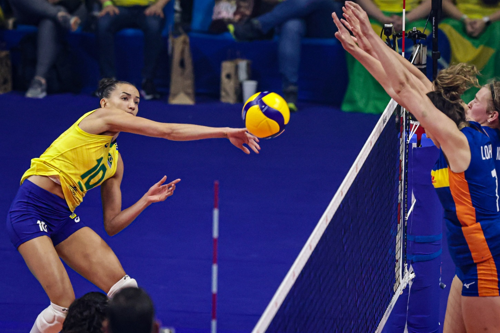
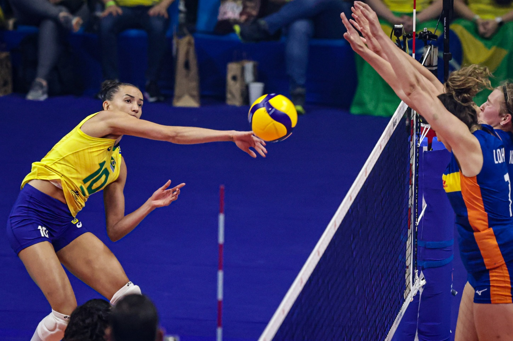

Voleibol
 


Criado em 1895 nos Estados Unidos por William G. Morgan, o vôlei foi idealizado como uma alternativa menos intensa ao basquete. Atualmente, mais de 800 milhões de pessoas jogam vôlei em todo o mundo, segundo a Federação Internacional de Voleibol (FIVB). É amplamente popular em países como Brasil, Rússia e Itália, promovendo cooperação, agilidade e condicionamento físico.